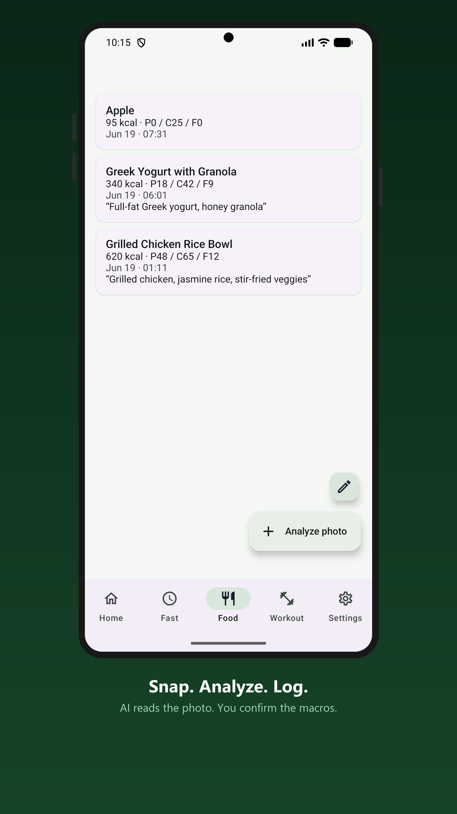
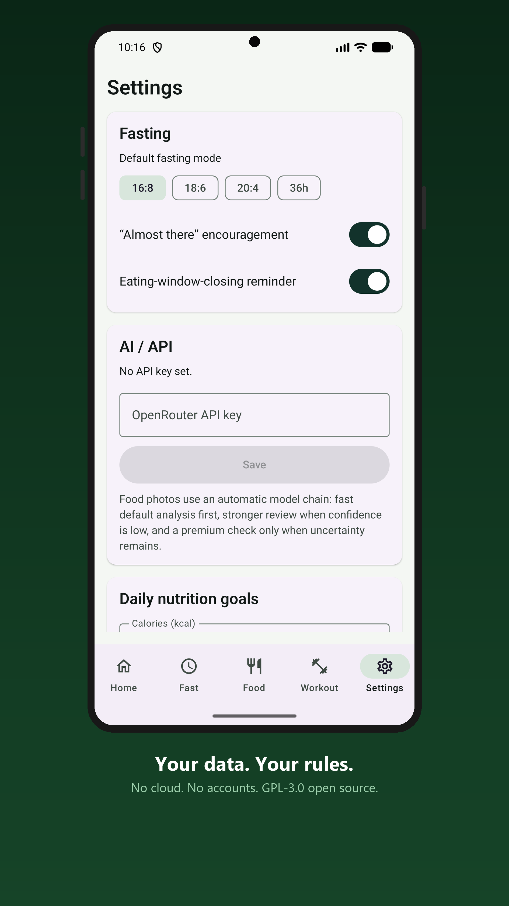

Everything in one app
An intermittent fasting timer, calorie and macro counter, weight tracker, and workout timer in one. No ads, no tracking, fully offline.
- Intermittent fasting timer with 16:8, 18:6, 20:4, and 36 hour modes
- State-driven fasting reminders instead of daily notification spam
- Food photo or text-description analysis using your own OpenRouter API key
- Manual meal entry, one-tap presets, and editable macro estimates
- Local calorie and macro goals
- Weight history with charting
- Simple, interval, and exercise/rest workout timers
- Dashboard for fasting, nutrition, weight, workout time, and streaks
- Daily journal notes on the progress calendar
- Optional Health Connect sync for weight and workouts, off by default
- Available in English, German, Spanish, French, Brazilian Portuguese, Russian, and Turkish
Your data stays yours
Solo Forge is built around local data ownership. Nothing leaves your device unless you ask it to.
There is no server to send data to.
Nothing to sign up for.
You are not being measured.
No background phone-home.
Android auto-backup is turned off.
Full backup/restore to a single file you control.
Free and open source under GPL-3.0.
About the AI food analysis
The one and only optional network feature. When you start food photo analysis, that photo or text is sent to OpenRouter using your own API key. It is off until you set a key, and Solo Forge makes zero network calls otherwise. Everything else — meals, weight, fasting history, workouts, settings, exports — stays on your device.
You pick the model
Settings offers four tested options, or you can type in any OpenRouter model id. Each analysis is a single request to the model you chose — never a silent chain of calls to progressively bigger models.
The default. Answers in about two seconds.
Asks you fewer follow-up questions.
An Apache-2.0 model, and the cheapest to run.
Lowest calorie error we measured.
The numbers in Settings are ours, not the vendors’
Every model is labelled with its typical response time, how often it answers without needing a follow-up question, its average calorie error, and roughly what it costs to run. Those figures come from a test set in the app’s own repository — dish photos with scale-measured ground truth, plus real phone photos — replaying exactly the request the app sends. Nothing is quoted from a vendor benchmark. In August 2026 every vision model OpenRouter had carried in the previous twelve months was screened this way: 108 candidates, and only a handful were good enough and fast enough to offer. Nearly a third of them took over 20 seconds to read a photo of dinner.
If a model has not been tested, the app says so instead of showing a number. That is why the custom-model field carries a warning where the other options carry figures.
It tells you when it is unsure
A calorie estimate from a photo is a guess, and the honest failure is almost always the same one: portion size. It shows up in around 80% of all analyses, far ahead of anything else. So instead of quietly rounding, Solo Forge names what it could not tell — the portion, the cooking method, oil or sauce you cannot see — and lets you correct it before saving.
A stronger model does not fix this. It cannot see how many grams are on the plate, or the oil already in the pan. Where a bigger model genuinely helps — telling one dish from another — there is a button to retry with one, and it is hidden on the options that have nothing stronger above them rather than offering a sideways move.
The full method, every rejected model, and the reasoning behind each decision are in the public repository.